为什么模拟器要和普通安卓真机不同操作？
普通安卓真机教程通常依赖“修补版游戏本体 APK + Localify 插件 APK”的方式完成汉化；但模拟器的系统环境、游戏安装来源、Root/系统分区状态都和真机不同，直接照真机流程安装时，插件可能无法稳定注入游戏进程。模拟器可以开启 Root 权限 和 可写系统盘，因此这里采用 Kitsune Mask + Zygisk + LSPosed 的方式，把 Localify 作为 Xposed 模块挂载到游戏上。这套流程更适合模拟器，但会修改模拟器系统环境，只建议在模拟器中使用。
本教程以 MuMu 模拟器为例。开始前请先准备好教程文件夹中的 1.Kitsune Mask、2.manager、3.LSPosed.zip、4.GamesToday，以及 Gakumas Localify 插件。
在模拟器右下角的工具文件夹中打开 谷歌安装器，下载并安装谷歌三件套。学园偶像大师需要谷歌相关环境，建议先完成这一步。
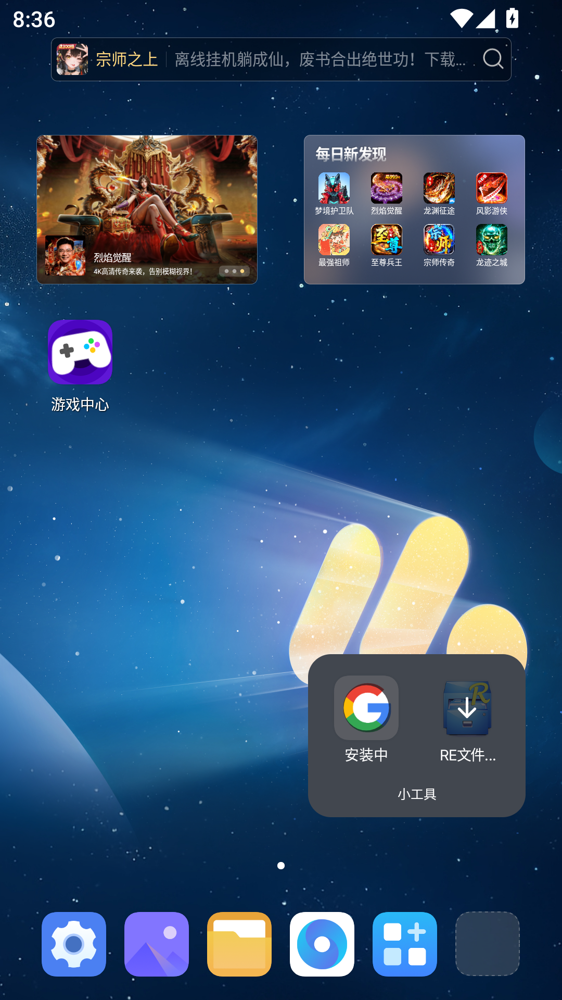
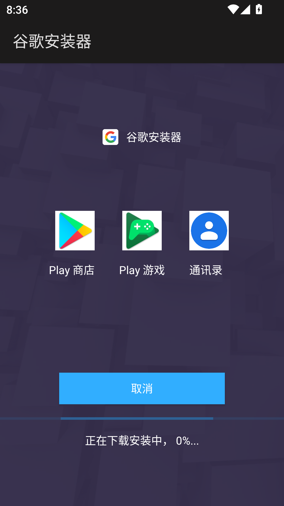
打开 MuMu 模拟器右上角设置，进入左侧菜单的 开发者选项。在这个页面中打开 Root 权限，并在 磁盘共享 里选择 可写系统盘。这两个选项都在同一个设置页内，设置完成后点击 立即重启，让 Root 和系统盘读写权限生效。
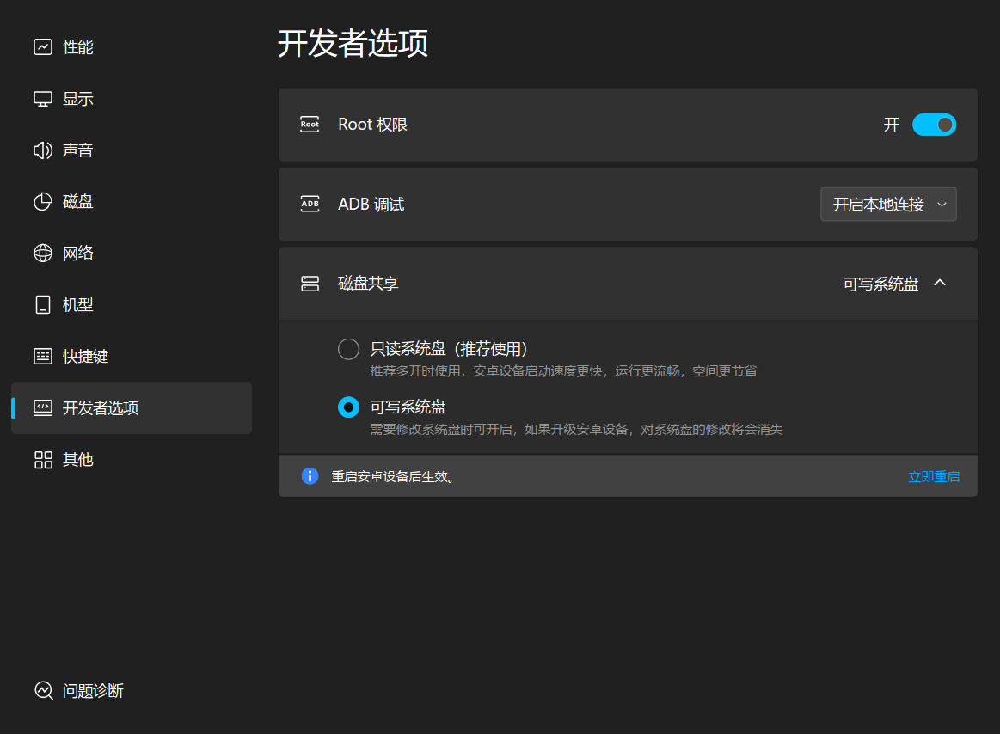
在电脑端打开 MuMu 共享文件夹，将汉化插件相关文件放入 Documents\MuMu共享文件夹\汉化插件。这里需要放入 1.Kitsune Mask、2.manager、3.LSPosed.zip、4.GamesToday、Gakumas Localify 和游戏 APK。
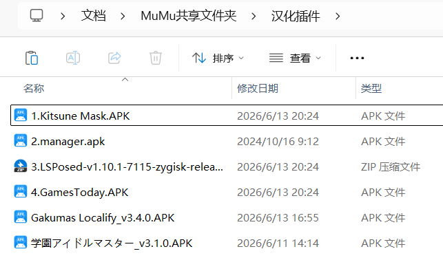
放好后，在模拟器文件管理器中进入 MuMu 共享文件夹 > 汉化插件。如果能看到这些 APK 和 ZIP 文件，说明共享目录已经生效，后续安装都从这里选择文件。
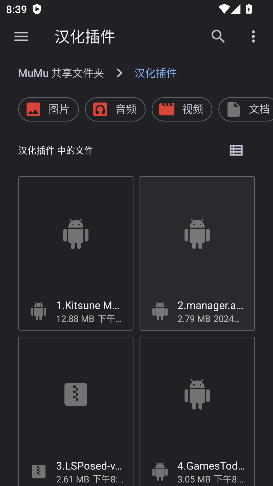
安装并打开 1.Kitsune Mask。首次打开时会请求超级用户权限，请选择 永久记住选择 并点击 允许，然后按提示重启模拟器。
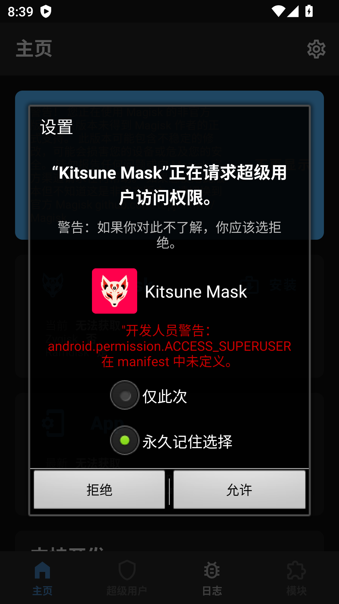
重启后再次打开 Kitsune Mask，进入安装页面，选择 直接安装（直接修改 /system），点击开始。安装完成后再次重启模拟器。
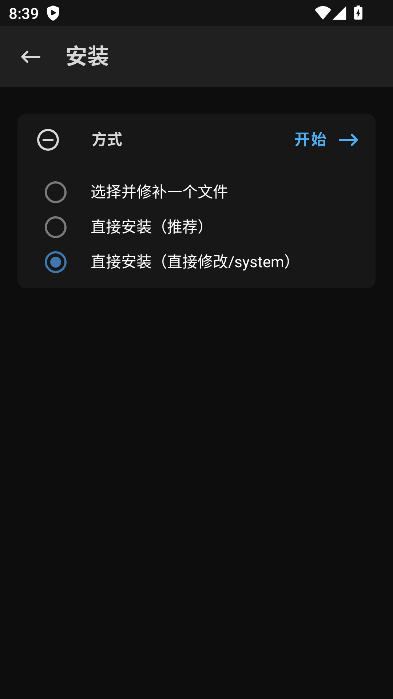
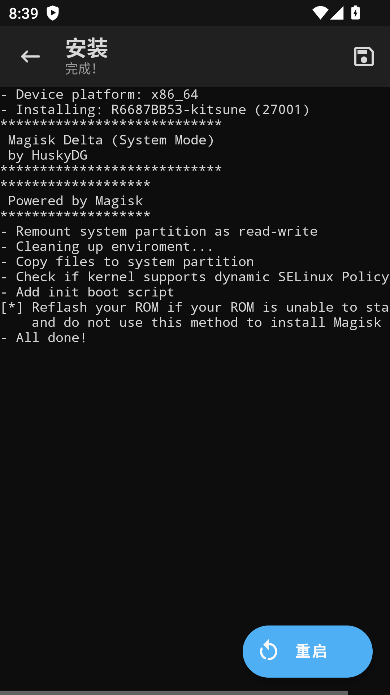
进入 Kitsune Mask 右上角设置，在 Magisk 相关设置中打开 Zygisk。开启后按提示重启模拟器。
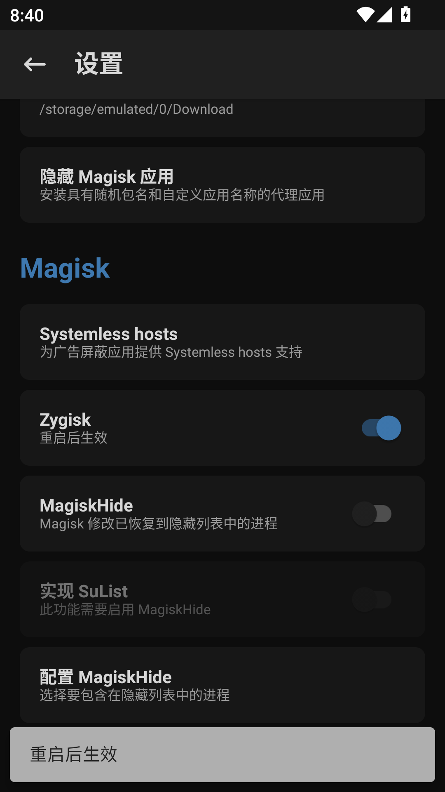
安装 2.manager。然后回到 Kitsune Mask，进入底部 模块 页面，点击 从本地安装，从 MuMu 共享文件夹中选择 3.LSPosed.zip 安装，安装完成后重启模拟器。
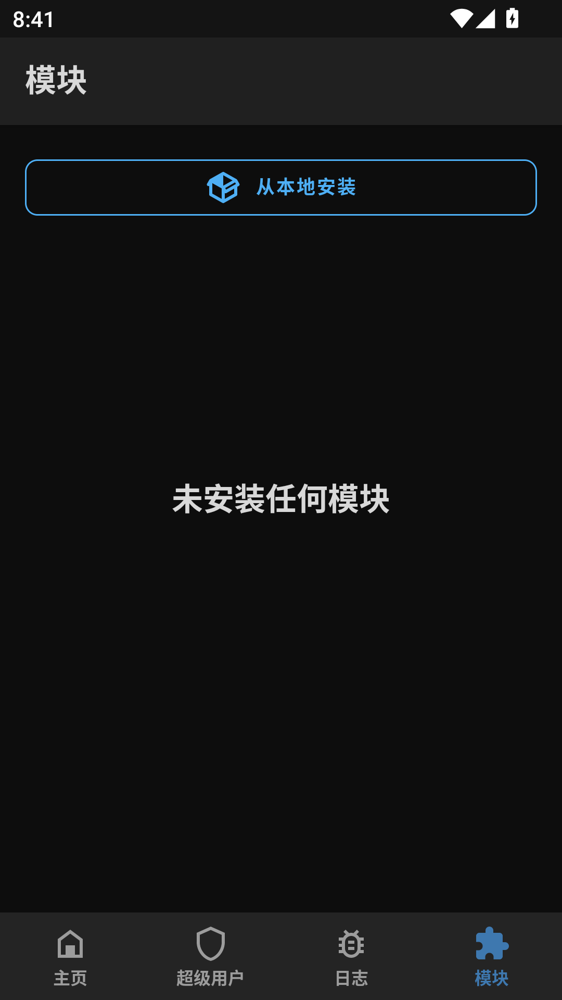
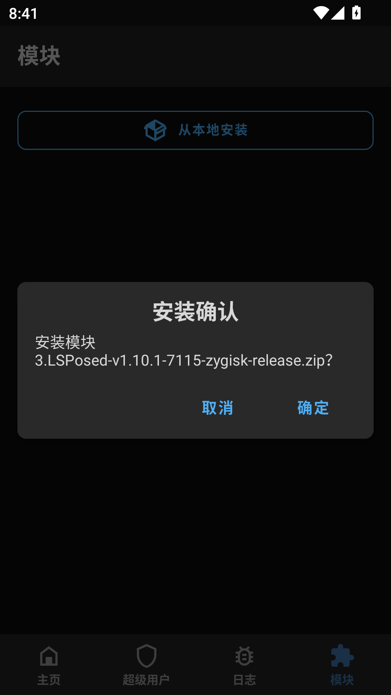
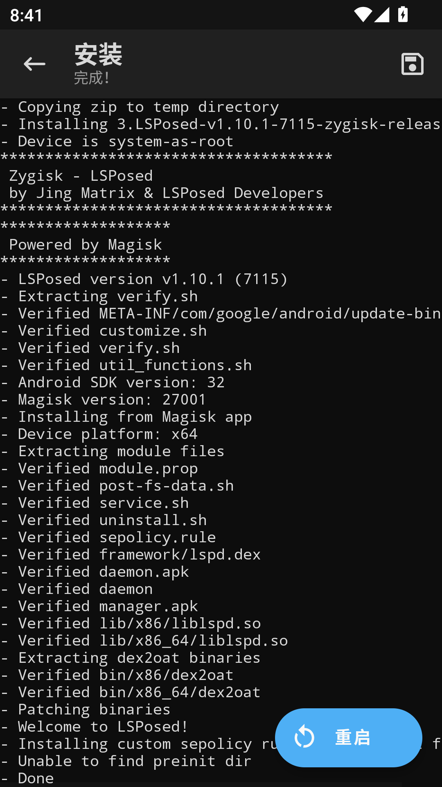
安装 4.GamesToday 后，通过 GamesToday 安装学园偶像大师。随后安装 Gakumas Localify 插件 APK。
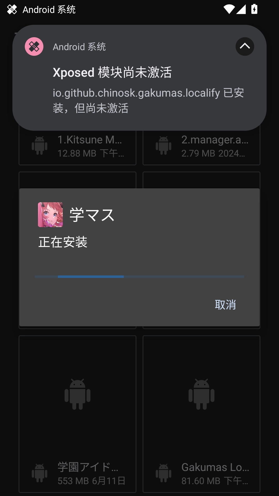
打开 LSPosed，进入底部第二个 模块 页面，点击 Gakumas Localify，打开 启用模块，并勾选学园偶像大师作为作用域。
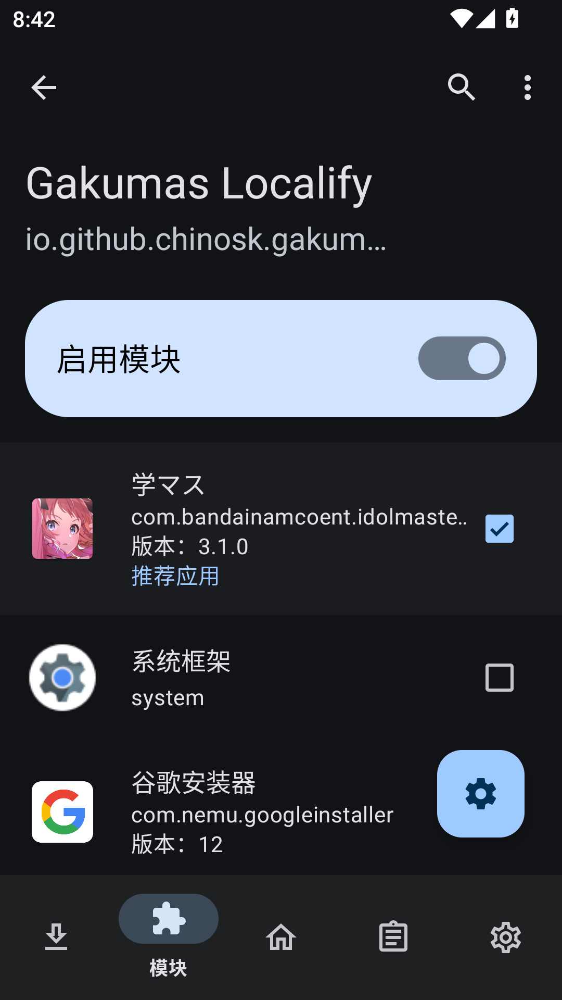
如果看到“Xposed 模块尚未激活”的提示，通常说明还没有在 LSPosed 中启用模块或没有重启，按本步骤确认后重启即可。
重启模拟器后打开游戏。如果能看到汉化插件提示，或进入游戏后文本/资源正常汉化，说明模拟器环境配置完成。
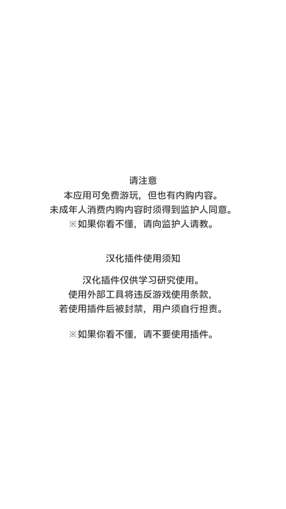
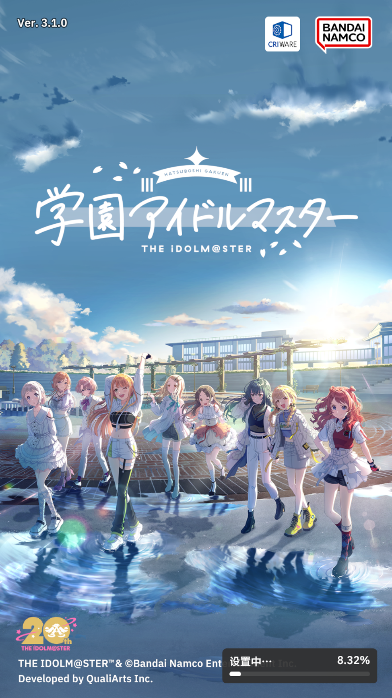